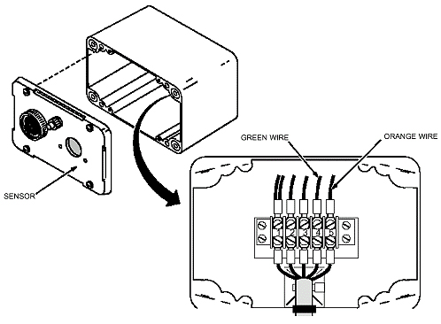

| NOTE: | If alarm sounds while removing sensor, press the RELAY RELEASE pushbutton at the oxygen monitor to stop it. |
For a wall-mounted sensor (with one FE):
Loosen four captive screws and remove the cover. (See Illustration 29.)
At the terminal board, remove the green wire from Terminal 4 and orange wire from Terminal 5.
Remove two screws attaching the sensor cell and circuit board to the cover.
Illustration 29: Wall-Mounted Sensor

For a ceiling-mounted sensor (with one FE):
Gain access to the sensor in the ceiling box.
Disconnect and remove the green and orange wires from the ceiling box terminal board.
Remove two screws attaching the sensor cell and circuit board to the ceiling box.